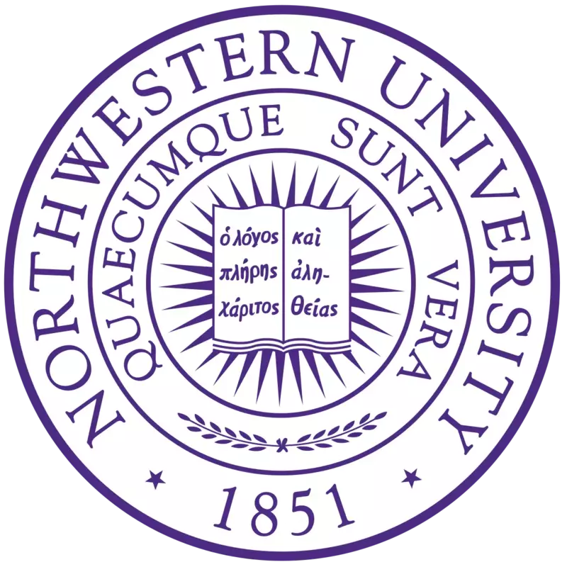

Henry Zhang (张恒睿)

Evanston, IL, USA
hrzhang(at)u.northwestern.edu
Greetings! I am a PhD candidate and Ryan Fellow at Northwestern working with Profs. Wei Chen and James Rondinelli. I have a broad interest in AI for science, with a focus on materials design.
Before starting graduate school, I earned my BS in Materials Science and Computer Science from Shanghai Jiao Tong University. As an undergraduate researcher, I worked in MaGIC at SJTU, where I developed informatics tools for high-throughput experiments. I was a summer research intern at Oxford (2018), Northwestern (2019), and MERL (2023).
Education
 Northwestern University
PhD, Mechanical Engineering, 2020–2025
Research Intern, 2019
Shanghai Jiao Tong University
BS, Materials Science & Engineering, 2016–2020
BS, Computer Science, 2017–2020
University of Oxford
Visiting Scholar, Department of Materials, 2018
News
| Nov 08, 2023 | Passed my thesis proposal exam! |
|---|---|
| Sep 15, 2023 | Glad to have our proposal funded by NSF DMREF. |
| Sep 08, 2023 | Wrapped up an enjoyable 3-month internship at MERL. |
| Jun 08, 2023 | Honored to receive the Ryan Fellowship! |